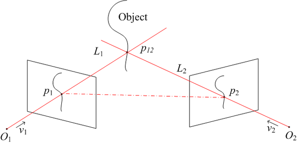
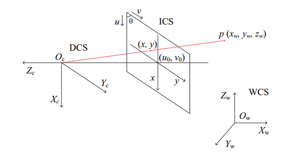
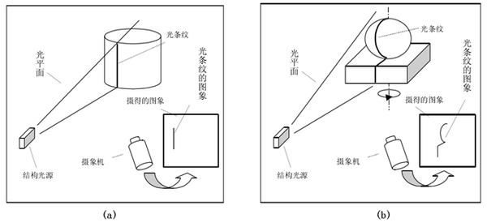
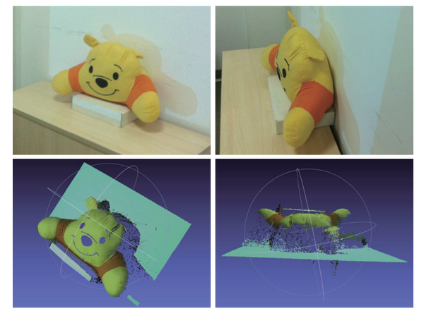

双眼可以测距和建立立体环境，双摄像头可以吗？
答案是可以！
这方面一直是计算机视觉的研究热点，并且已经有了不错的成果！本人研究生阶段主要做三维重建，简单写一些自己所了解的。
首先三维和二维的区别，这个大家都容易理解，二维只有x、y两个轴，比如一张素描画，我们整体的感觉是“平”的，而三维则是多了一个z轴的维度，这个z轴的直观理解就是点离我们的距离，也即 “depth(深度)”。
再来看看我们人眼，人眼是一个典型的双目系统，大家可以做个小实验：闭上一只眼睛，然后左右手分别拿着一只笔，试着让笔尖相碰，哈哈，是不是有怀疑人生的感觉？ 我们分别用左右眼看同一个物体，可以清楚地感觉到图像的差异，这个差异就是我们形成三维视觉的基础，有了这左右眼图像的差异，配合大脑强大的识别匹配能力，我们就能基本确定物体离我们的距离，也即之前说的"深度"，上个实验中我们只睁开一只眼睛，虽然能清楚的看到左右手中的笔，但是大脑没法得出深度信息，所以你在“上下左右”方向上能准确定位，但是“前后”方向上却无能为力。
现在来说说左右图像的“差异”到“深度”的转换，这里可能需要一点点空间几何知识，其实也很简单

物体上的点p12分别对应左右图像上点p1和p2，求解p1、p2、p12构成的三角形，我们就能得到点p12的坐标，也就能得到p12的深度。这个计算对于人脑来说是小case，我们更多地依赖经验和强大的脑补能力，虽然我们不能计算出某个物体离我们的精确距离，我们却能非常准确地建立物体距离的相对关系，即哪个物体在前，哪个在后，这对日常生活已经足够了。
而我们做工程上的双目视觉三维重建，核心目标就是解上图所示的三角形，相机可以抽象成一个简单的透视系统：

空间点p经过相机成像，映射到图像上点(x,y)，其中Oc是相机光心，WCS、DCS、ICS分别是世界坐标系、设备(相机)坐标系、图像坐标系。空间点p到相机图像上点的几何变换可以用相机内参来描述，具体公式就不说了，可以简单地理解为相机拍照是对点的几何坐标变换，而相机内参就是决定这个变换的一些参数。
继续看之前的光学三角关系图，O1、O2分别是左右相机的光心，现在我们要做的就是确定这两个相机的相对位置关系：可以用旋转矩阵R和平移向量T来描述，确定了R和T，两个相机的位置关系就确定了，这个步骤叫做相机的外参标定。一般的做法是用三维重建的逆过程来做，即由一系列已知的p1、p2和p12来求解光学三角形，估计出*的R、T。简而言之，外参标定确定相机之间的相对位置关系。
好了，现在我们只需要知道p1、p2的坐标，我们就能轻松算出p12的坐标，完成三维重建。我们把p1、p2称为一个点对(pair)，他们是同一个空间点在不同相机中的成像点。寻找这样的点对的过程称为立体匹配，它是三维重建最关键，也可以说是最难的一步。我们都玩过“大家来找茬”，找的是两幅图的不同点，而立体匹配则是找“相同点”。对人脑来说，这个问题太easy了，给你同一个物体的两幅图，你能轻松找出一副图像上的点在另一幅图像中的对应点，因为我们人脑的物体识别、分割、特征提取等等能力实在太强了，而且性能特别高，估计几岁的小孩就能秒杀现有的*的算法。
常规的匹配算法一般通过特征点来做，即分别提取左右图像的特征点(常用sift算法)，然后基于特征点配合对极几何等约束条件进行匹配。不过这类匹配算法精度都不是太高，所以人们又想了其它一些方法来辅助匹配，结构光方法是目前用的比较多的，原理不难理解，就是向目标物体投射编码的光，然后对相机图像进行解码，从而得到点对，举个简单的例子，我们把一个小方块的图案用投影仪投到物体表面，然后识别左右相机图像中的小方块，如果这个小方块很小，看作一个点，那么我们就得到了一个点对。
贴个线结构光的示意图：

这个示意图里面只有一个相机，其实投影仪是可以看作相机的：投出的光图案照射在物体表面相当于被拍照的物体，而投影仪的输入图像则相当于相机拍出来的照片，所以投影仪也是当作相机并用同样的方法来标定内外参，即上图本质上也是双目视觉系统。
总结一下，双目视觉三维重建的基本过程：相机内参、外参标定 -> 立体匹配 -> 光学三角形求解，这里面最核心、也最影响重建效果的就是立体匹配。
贴几张本人实验的图(用的最基本的格雷码结构光)：

以上说的都是双目视觉三维重建，实际上还有其它一些重建方法，如早期的探针法，简单粗暴，直接拿探针在物体表面移动，一个点一个点测坐标；还有一类通过直接测距来进行三维重建，如超声波、TOF，即对物体表面逐点用声、光程差来测距，从而得到三维点云；光学方法分为主动和被动两大类，主动和被动指的是是否向物体表面投光，主动方法有激光扫描、相位测量以及我毕设的研究课题结构光方法等，被动方法有单目视觉(如阴影法)和上文所述的立体视差方法等等。
目前还有一类三维重建方法非常火：SFM(Structure from Motion)，这类方法的特点是不需要相机参数，仅仅根据一系列图像就能进行三维重建，也就是说，你随便拿个手机对着物体拍一些图片就能重建这个物体的三维模型，大家可以去体验下AutoDesk公司的Autodesk 123D Catch，除了近距离物体的三维重建，SFM还有更激动人心的应用：大型场景三维重建，感兴趣的可以看看这个Building Rome in a Day，他们在flickr上搜索两百万张罗马的照片，通过亚马逊提供的计算服务，最终得出整个城市的三维模型，是不是又有云计算、大数据的感觉。。。这波人貌似有几个是Google Earth团队的。
原理上其实也不难理解：从特征点对入手，反向求解出相机的内外参(选定一个相机作为世界坐标系)，然后重建更多的点。
大家应该对电影《普罗米修斯》里面的用于洞穴建模的飞行器印象深刻：
推荐
-

-

QQ空间
-

新浪微博
-

人人网
-

豆瓣